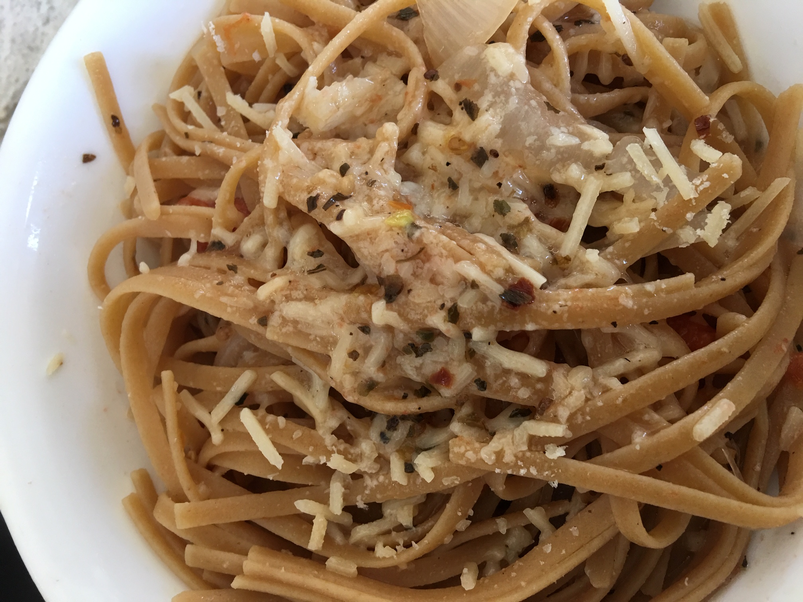

Recipe: Easy One-Pot Pasta

Ingredients:
- 1 lb linguine (whole wheat or regular)
- 1 lb grape tomatoes, halved
- 1 onion, thinly sliced (reduce crying by cutting and adding last)
- 5 cloves garlic, crushed or thinly sliced
- 1 tsp red pepper flakes
- 2 tsp dried basil
- 3 tbsp olive oil
- 2 tsp salt
- 1 tsp ground black pepper
- 5 cups water
- Freshly grated parmesan cheese
- Extra olive oil, salt and pepper
Instructions:
- Combine pasta, tomatoes, onion, garlic, red pepper flakes,
dried basil, olive oil, salt, pepper, water in a big pot.
- Keeping pasta on the bottom, mix the other ingredients.
- Boil until pasta is al dente (about 8-10mins).
- Mix all ingredients.
- Serve in bowls. Add (at least 1 tsp) parmesan, to taste.
- Add olive oil, freshly ground salt and pepper, to taste.
Alternate Saute instructions